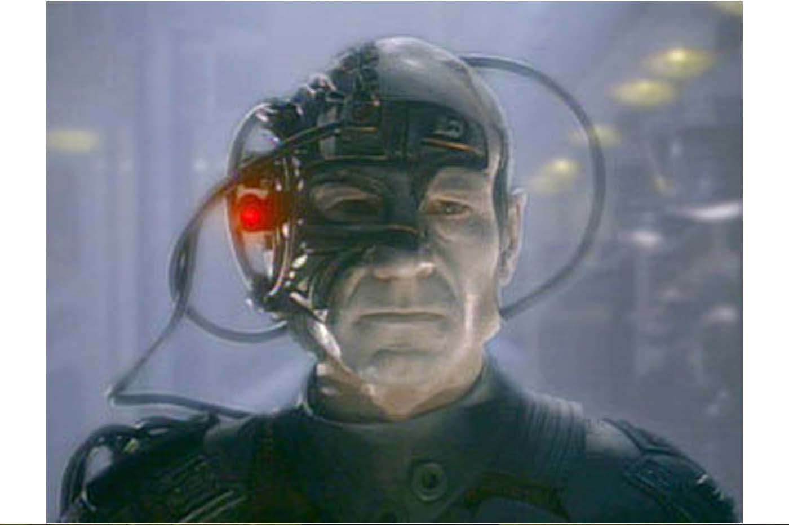
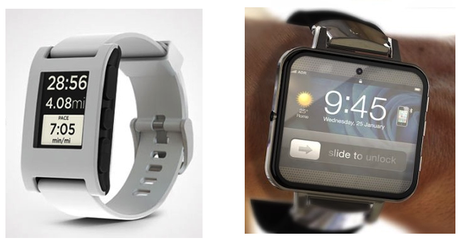
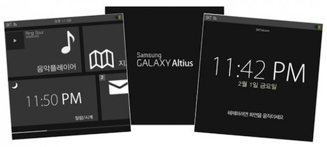
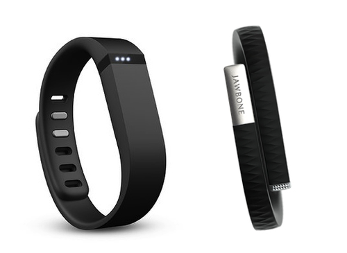
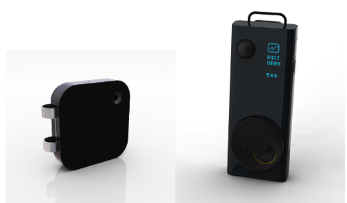
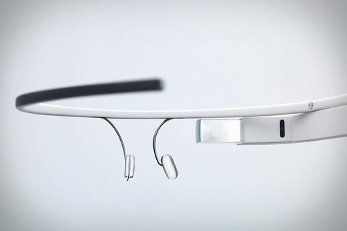

2013 - The Year of Wearable Computing
Originally published at https://singularityhacker.com/2013-the-year-of-wearable-computing

This will be the year. All tech trends and rumors point to the eminent emergence of wearing computing devices in at least four categories.
1. Smart Watches
Wristwatches are going to make a big comeback in 2013, and not merely as timepieces but as an extension of your smartphone. Are you ready to have the Internet and a virtual assistant at the flick of your wrist? I am!
The Pebble smartwatch is, to date, the most succesful Kickstarter project raising over ten million dollars. This was in response to a mere $100k funding goal. The first shipments of the Pebble went out on January 22nd. Can’t wait to get my Pebble!

While Pebble may appeal to a geekier crowd and early adopters, there is strong reason to suspect that Apple will announce a smartwatch this year as well.
“Rumor has it Apple is working on a Bluetooth 4.0-enabled smart watch and could even launch the device as early as the first half of this year.” - 9to5mac.com
When Apple does something, they do it smooth. The ‘iWatch’ will most likely display notifications, remote control some aspects of your iPhone, and act as a proxy to your favorite virtual assistant: Siri.

Samsung has also leaked some shots of a smart watch called the Galaxy Altius that it is planning to release this year.
2. Activity Monitors
Activity monitors are basically supped-up connected pedometers but their cool because they give you a lot of cool information about your habits and activities.

The newest and, in my opinion, greatest contender is the Fitbit flex but there are also fans of the Jawbone Up.
3. Always on Wearable Cameras
We are literally seeing the beginning of large scale Life Logging. Life Logging is when you record every thing you see and hear. These cameras are made with that use case in mind.

The Memoto camera will be shipping to the first Kickstarter bidders in the next few months. There is no real news about the Autographer.
4. Google Glass

“The product (Google Glass Explorer Edition) will be available to United States Google I/O developers for $1,500, shipping early in 2013, while a consumer version is slated to be ready within a year of that.” - Wikipedia.org
So if, between social networking, 4Square check-ins, and emails, you occasionally feel attention-spaced drained and suffering from futureshock, you haven’t seen nothing yet. You’re about to get even more connected. Wearable computers are the next platform war.